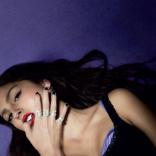

Rekomendasi Album Olivia Rodrigo
Olivia Rodrigo telah menjadi salah satu ikon pop generasi masa kini yang sukses semenjak album debutnya, Sour pada 2021 lalu viral melalui hits Drivers License,
dilanjutkan dengan perilisan single Good 4 U yang terinfluensi oleh musik chic pop rock 2000an.
Mengawali karir sebagai salah satu bintang Disney, telah menemukan jalanan meninggalkan citranya dari bintang anak-anak menuju penggemar yang juga mulai beranjak dewasa bersamanya.
Semakin berani memeluk kebanggaan dan kegalauan wanita muda melalui lirik yang problematik namun jujur dari hati.
Seiring bertambah besarnya popularitas, kini Olivia Rodrigo menanggung beban besar untuk memenuhi ekspektasi di skena musik dunia.
Baik untuk penggemar setianya, maupun penikmat musik umum yang mempertanyakan kredibilitas dari kepopulerannya.
SOUR

Kesuksesan Drivers License mengantarkan Olivia Rodrigo merilis album debut Sour di usia 17 tahun.
Seperti remaja umumnya, Sour menjadi diari Rodrigo mengenai kisah cinta berakhir tragis, patah hati, dan pencarian jati diri.
Sour digarap oleh Rodrigo bersama produser Dan Nigro. Selayaknya musisi di generasi Z, Rodrigo enggan mengkotakkan album ini dalam satu genre tertentu.
Sebaliknya ia mengklaim Sour sebagai album versatile dengan persimpangan antara mainstream pop, musik folk, dan alternative rock.
Ia juga mengakui influence dari sederet musisi serta bintang pop dan rock di album ini.
Pada nyatanya, Sour merupakan perpaduan dari pop dan alt pop. Elemen serta energi pop punk dan rock terdapat di beberapa track. Disempurnakan hadirnya bedroom pop ballad.
Berikut ini merupakan tracklist pada album Sour:
- Brutal
- Traitor
- Drivers License
- 1 Step Forward, 3 Steps Back
- Deja Vu
- Good 4 U
- Enough For You
- Jealousy, Jealousy
- Favorite Crime
- Hope Ur OK
- All American Bitch
- Bad Idea Right?
- Vampire
- Lacy
- Ballad Of A Homeschooled Girl
- Making The Bed
- Logical
- Get Him Back!
- Love Is Embarassing
- The Grude
- Pretty Isn't Pretty
- Teenage Dream
GUTS

Dalam album kedua ini, Rodrigo mengeksplorasi tema keraguan diri yang lebih dalam. Mulai dari perasaan cemburu, fantasi akan balas dendam yang kejam, hingga rasa frustrasi dalam memenuhi standar masyarakat dan gagasan yang tidak realistis tentang kecantikan.
Beberapa tema pembicaraan ini terasa lebih baik daripada yang lain, mengesankan bagaimana Rodrigo berusaha memperluas pandangannya melampaui usianya saat ini.
Secara keseluruhan, mengibaratkan Guts sebagai burn book atau buku harian dari Olivia Rodrigo.
Guts mencerminkan perjalanan kreatif seorang seniman yang sedang masih dalam proses transisi dari masa remaja di ambang pintu wanita dewasa.
Lagu-lagu dalam tracklist-nya terdengar labil, berubah-ubah antara keluhan remaja yang dramatis dengan lantunan syair yang lebih menunjukan kematangan prinsip dan cara pandang.
Berikut ini merupakan tracklist pada album Guts: